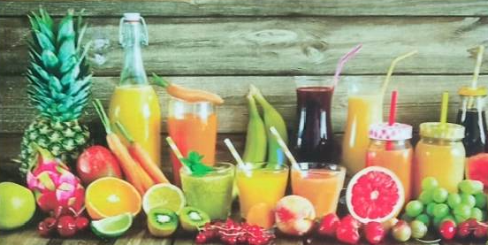
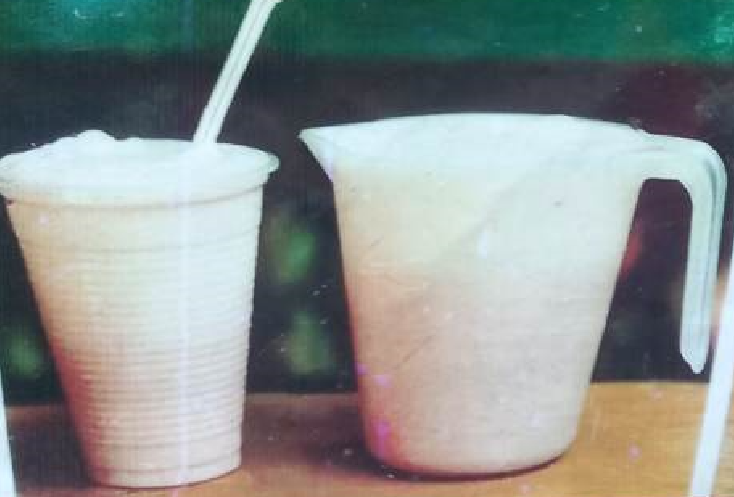
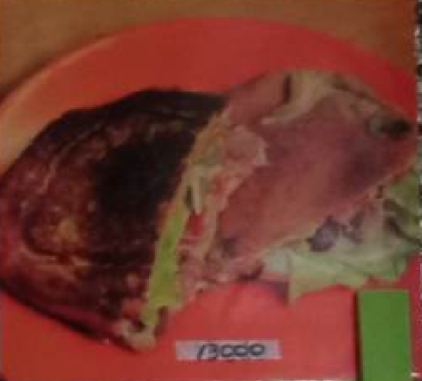

Bienvenido al sitio web de ayurami, aqui podras encontrar toda la
informaición de nuestro negocio, desde año de origen hasta la
variedad de productos alimenticios que ofrecemos.
Puede ver los ultimas novedades del negocio en la seccion de
"Novedades" donde puede informarte de nuevos productos, los mejores
productos vendidos en el mes o simplemente saber cual es el producto
mas solicitado por los clientes.
Esperamos que esta información te sea de utilidad y te animes a
visitarnos personalmente.

Novedades
Esta ultima semana, los banana split han tanido muchos pedidos por parte de clientes mayormenete adolecente sy adultos jovenes.
Normalmente de lunes a viernes, los jugos naturales son mas vendidos que las ensalas de fruta con helado, pero los fines de semana es al contario.

Los fines de semana se han vendido los productos que mas se han vendido son los salpicones, sanduches y jugos naturales con leches.

